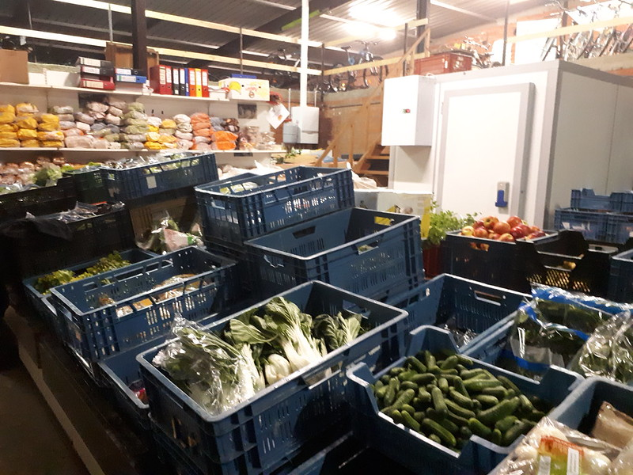

Wilt u voedsel zoals, fruit, groenten, zuivel en andere nog houdbare artikelen schenken aan Actie MIN? Neemt gerust contact op via mail : actiemenseninnood@gmail.com of telefonisch via : 0473 24 13 61
In Carrefour market, Statiestraat 53A in Mol vind je onze ‘Voedselbox’ waarin je altijd droge voeding mag droppen.

Sponsoring:
Trooper – Koop je vaak online, dan kan je via Trooper.be ook onze vereniging ondersteunen. Je zoekt onze vereniging op en je kan shoppen. Wij ontvangen een klein percentage.
Warmste week : Wij zijn lid van de Warmste Week en voor de tweede jaar op rij waren er verschillende acties die ons extra centjes in het laatje brachten.